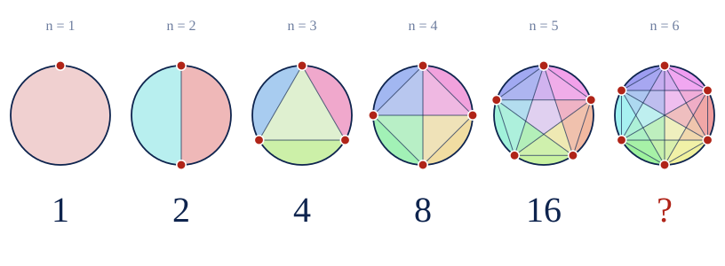
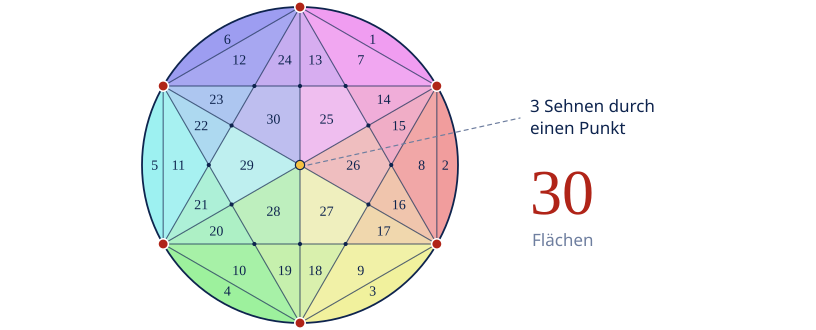
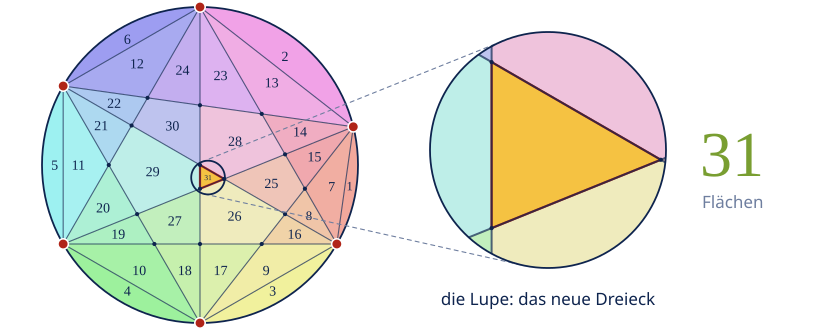
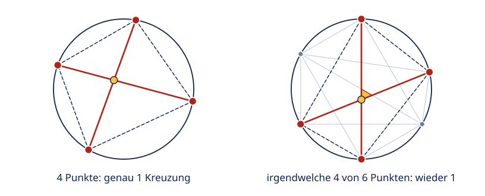

Sarahhax2210
Sarahhax2210
Good morning!
Nur das Schöne wird die Welt retten!
Fjodor Dostojewski
Nicht verzagen, Doc Alvers fragen!
Informatik — Klasse 9
1, 2, 4, 8, 16 … ?
Warum fünf bestandene Tests noch nichts beweisen
Nicht verzagen, Doc Alvers fragen!
Kapitel 01
Das Rätsel
Punkte auf einem Kreis, alle miteinander verbunden
Nicht verzagen, Doc Alvers fragen!
Die Spielregel
Setzt n Punkte auf einen Kreis
Verbindet jeden Punkt mit jedem — diese Strecken heißen Sehnen
Die Sehnen zerschneiden die Kreisscheibe in Flächen
Frage: Wie viele Flächen sind es bei n Punkten?
Ein Tipp: Nummeriert die Flächen beim Zählen, sonst zählt ihr doppelt
Nicht verzagen, Doc Alvers fragen!
Die ersten fünf Fälle

Nicht verzagen, Doc Alvers fragen!
Was kommt als Nächstes?
1, 2, 4, 8, 16 — jedes Mal verdoppelt
Also kommt als Nächstes 32 … oder?
Überlegt kurz, bevor ihr weiterklickt: Würdet ihr darauf wetten?
Kleiner Hinweis: Es ist nicht 32
Nicht verzagen, Doc Alvers fragen!
Kapitel 02
Nachgezählt
Sechs Punkte, zwei Ergebnisse
Nicht verzagen, Doc Alvers fragen!
Regelmäßiges Sechseck: 30 Flächen

Nicht verzagen, Doc Alvers fragen!
Ein Punkt ein Stück verschoben: 31 Flächen

Nicht verzagen, Doc Alvers fragen!
Was ist da passiert?
Im regelmäßigen Sechseck laufen drei Sehnen durch einen Punkt
Verschiebt man einen Punkt, kreuzen sie sich an drei Stellen — dazwischen entsteht ein Dreieck
Das Dreieck ist die 31. Fläche
Mehr geht nicht: 31 ist das Maximum — und 32 wird es nie
Die Punkte liegen dann in allgemeiner Lage: nie drei Sehnen durch einen Punkt
Nicht verzagen, Doc Alvers fragen!
Kapitel 03
Warum 31?
Zählen, ohne zu zählen
Nicht verzagen, Doc Alvers fragen!
Jede Fläche hat einen Grund
Der leere Kreis ist 1 Fläche
Zieht man eine Sehne, schneidet sie jede Fläche auf ihrem Weg in zwei
Jede Sehne bringt 1 neue Fläche — und 1 mehr für jede Kreuzung, durch die sie läuft
Zusammen: Flächen = 1 + Sehnen + Kreuzungen
Bei 6 Punkten: 1 + 15 + 15 = 31
Nicht verzagen, Doc Alvers fragen!
Jede Kreuzung gehört zu genau vier Punkten

Nicht verzagen, Doc Alvers fragen!
Nachgerechnet
| n | Sehnen (Paare) | Kreuzungen (Vierergruppen) | Flächen = 1 + Sehnen + Kreuzungen |
|---|---|---|---|
| 1 | 0 | 0 | 1 |
| 2 | 1 | 0 | 2 |
| 3 | 3 | 0 | 4 |
| 4 | 6 | 1 | 8 |
| 5 | 10 | 5 | 16 |
| 6 | 15 | 15 | 31 |
| 7 | 21 | 35 | 57 |
| 8 | 28 | 70 | 99 |
Sehnen = Paare von Punkten, Kreuzungen = Vierergruppen von Punkten
In Mathe schreibt man dafür und — gesprochen „n über 2“ und „n über 4“
Nicht verzagen, Doc Alvers fragen!
Kapitel 04
Und was hat das mit Informatik zu tun?
Testen heißt: den Fehler suchen
Nicht verzagen, Doc Alvers fragen!
Zwei Programme, fünf gleiche Antworten
def verdoppeln(n):
return 2 ** (n - 1)
def flaechen(n):
sehnen = n * (n - 1) // 2
kreuzungen = n * (n - 1) * (n - 2) * (n - 3) // 24
return 1 + sehnen + kreuzungen
for n in range(1, 9):
a, b = verdoppeln(n), flaechen(n)
print(n, a, b, "ok" if a == b else "FEHLER")Nicht verzagen, Doc Alvers fragen!
Die Ausgabe
| n | verdoppeln(n) | flaechen(n) | Test |
|---|---|---|---|
| 1 | 1 | 1 | ok |
| 2 | 2 | 2 | ok |
| 3 | 4 | 4 | ok |
| 4 | 8 | 8 | ok |
| 5 | 16 | 16 | ok |
| 6 | 32 | 31 | FEHLER |
| 7 | 64 | 57 | FEHLER |
| 8 | 128 | 99 | FEHLER |
Fünf Tests grün — und trotzdem ist „verdoppeln“ falsch
Nicht verzagen, Doc Alvers fragen!
Was lernen wir fürs Testen?
Ein Programm, das fünf Tests besteht, kann beim sechsten trotzdem falsch sein
„Testen kann die Anwesenheit von Fehlern zeigen, aber nie ihre Abwesenheit.“ — Edsger Dijkstra
Gute Tests suchen Grenzfälle und Sonderfälle — hier: größere n und symmetrische Punkte
Und wer sicher sein will, braucht eine Begründung — wie die Zählregel von eben
Nicht verzagen, Doc Alvers fragen!
Wie zählt das Labor die Flächen?
Die Punkte sind Winkel auf dem Kreis, die Sehnen Strecken dazwischen
Für je zwei Sehnen rechnet es den Schnittpunkt aus
Gleiche Punkte werden zusammengelegt — aber Kommazahlen sind nie ganz genau:
in Python ergibt 0.1 + 0.2 nicht 0.3, sondern 0.30000000000000004
„gleich“ heißt deshalb: näher als ein Milliardstel
Dann läuft es um jede Fläche einmal herum und zählt — so stimmt auch die 30
Nicht verzagen, Doc Alvers fragen!
Selbst ausprobieren
„Regelmäßig“ ergibt bei 6 Punkten 30. Zieht einen Punkt ein Stück — die Zahl springt auf 31.
Nicht verzagen, Doc Alvers fragen!
Ein Muster, das fünfmal stimmt, ist noch kein Beweis. Tests finden Fehler — dass keine mehr da sind, zeigen sie nie.
Merksatz
Nicht verzagen, Doc Alvers fragen!
Fun Facts
Das Rätsel heißt Mosers Kreisproblem — nach dem Mathematiker Leo Moser
Die Folge 1, 2, 4, 8, 16, 31, 57, 99 steckt im Pascalschen Dreieck: die Summe der ersten fünf Zahlen jeder Zeile
Für regelmäßige n-Ecke fanden Bjorn Poonen und Michael Rubinstein erst 1998 eine Formel — mit Sonderfällen bis n teilbar durch 210
Ein anderer Anfang 1, 2, 4, 8, 16: immer die Quersumme dazuzählen — dann geht es mit 23, 28, 38, 49 weiter
Auf YouTube erklärt es der Mathologer: „The hardest ‚What comes next?‘“
Nicht verzagen, Doc Alvers fragen!
Eure Aufgabe
Zeichnet einen Kreis mit 5 Punkten, verbindet alle und zählt nach: 16?
Jetzt 6 Punkte, unregelmäßig verteilt — nummeriert die Flächen, bis ihr bei 31 seid
Und 6 Punkte als regelmäßiges Sechseck: Wo fehlt die 31. Fläche?
Programmiert `flaechen(n)` und `verdoppeln(n)` bis n = 10 — ab welchem n ist der Unterschied größer als 100?
Nicht verzagen, Doc Alvers fragen!
Lösung zu Aufgabe 4
Unterschiede: n = 6 → 1, n = 7 → 7, n = 8 → 29, n = 9 → 93, n = 10 → 256
Ab n = 10 ist der Unterschied größer als 100: 512 gegen 256
Die 256 kommt also doch — nur bei 10 Punkten statt bei 9
Nicht verzagen, Doc Alvers fragen!